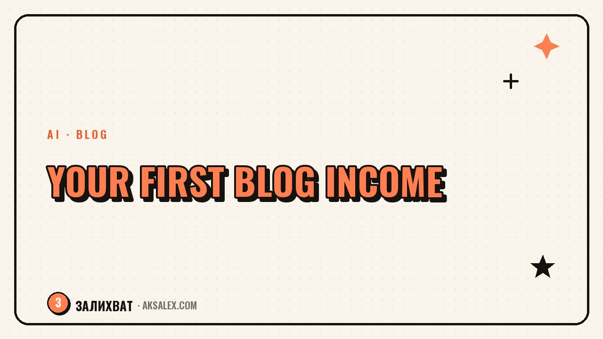

Your First $1,000 From a Blog: Where to Start

Why your first sale matters more than a million views
Reach warms your ego, but it doesn't put money in your account. The first payment is another story: it proves someone is willing to pay for what you do. That changes how you see the blog - it goes from a hobby to a venture with a measurable result.
So the goal at the start isn't to gather ten thousand followers, it's to get your first payment. Even if it's a symbolic amount for a consultation with an acquaintance from your blog, or your first affiliate sale.
Where people actually start earning
For most bloggers, the first income comes not from ads but from one of three sources.
- A paid consultation or review in your field - even just 30 minutes
- An affiliate link to a product you use yourself
- A one-off gig: writing a text, shooting a story, editing a video for someone else
- Selling your own guide, template, or checklist at a small price
My first thousand was paid for a consultation on a content plan. I had 400 followers and three reviews from friends. That was enough for someone to decide to reach out.
How many followers you really need
Fewer than it seems. For brand ads you really do need thousands of followers and steady reach. But for consultations, services, and affiliate sales, what works isn't the size of your audience but the trust in you as someone who knows the subject.
| Income format | Audience needed |
|---|---|
| Consultation in your field | from 100-300 real followers |
| Affiliate link | from 500 followers, engagement matters |
| Brand advertising | from 5-10 thousand and steady reach |
| Selling a guide or template | from 300-500 followers, the niche matters |
How to find your first income source
Look at what people already ask you about
If the same question keeps coming up in your comments and DMs, that's a ready-made service. People are already showing you what they'd pay for; you just need to turn it into a clear offer with a price.
Start with what you can do without training
Don't wait for a monetization course. If you can put together a content plan, shoot stories, or write posts, that's already a service you can charge for right now, even while your blog is small.
Common mistakes that push your first income further away
There are a few habits that make the money come later than it could.
- Waiting for 'enough' followers instead of offering a service now
- Being shy about naming a price and constantly discounting before you've even started selling
- Selling everything at once - consultations, guides, ads - instead of one clear format
- Staying silent about the fact that you offer paid services at all
The audience won't offer to pay on its own. You have to say plainly in your blog that you help with a specific task and that it costs a certain amount.
How to keep your motivation while the money isn't there yet
Between the first post and the first payment there are often weeks, sometimes months. That's normal: trust isn't built in three days. It helps to keep a small list of what's already worked out: someone messaged with a question, someone shared a post, someone praised the result.
Such a list shows there's movement, even when the money hasn't arrived yet. And the first payment usually comes out of nowhere - from someone you didn't even count as 'your audience'.
Frequently Asked Questions
How long do you need to run a blog before your first income?
It varies: some get their first payment after a month, others after six. What matters isn't the timeframe but consistency and whether you offer paid formats at all.
Can you earn with 200-300 followers?
Yes, if it's a live, engaged audience. Consultations, one-off services, and small products work even with modest reach, as long as people trust you.
How do you name a price if you've never sold services before?
Base it on the market: look at what others charge for similar services and set yours slightly below average at the start. After a couple of orders you can raise it.
What if nobody messages about buying?
Check whether your blog even says you offer paid services. Often the problem isn't demand - it's that your audience doesn't know they can pay you at all.
Do you need a separate website or store for your first sales?
No. At the start a post describing the service, the price, and how to get in touch is enough - DMs or a messenger cover your whole first hundred sales.
Enjoyed this one? Here's what to read next. Blog formats without your face on camera for people shy of the lens: from hands and process to voiceover.
Read the article →not by hand